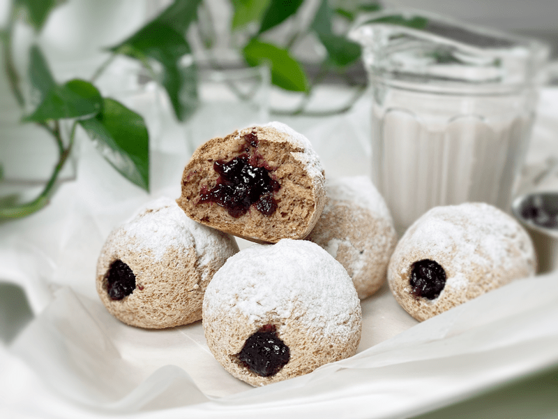
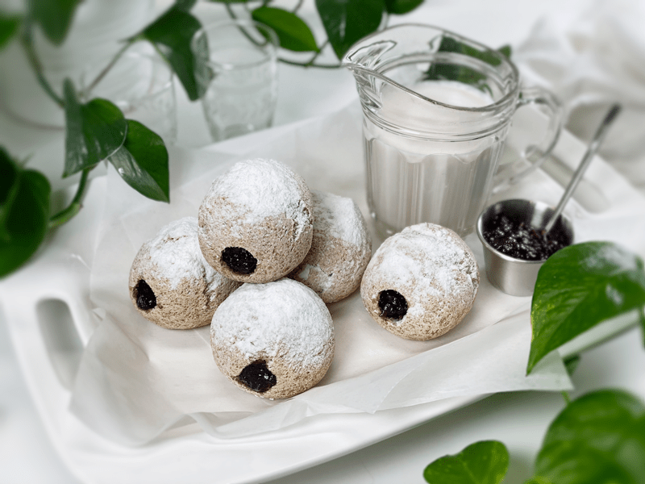
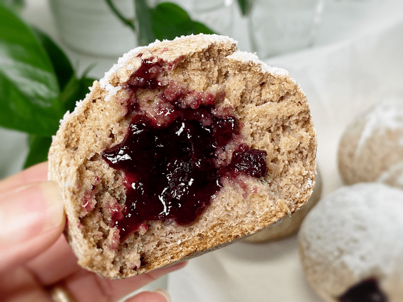
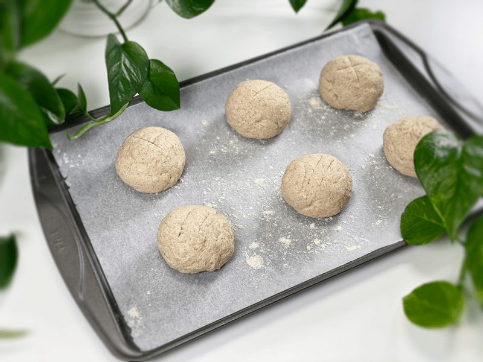
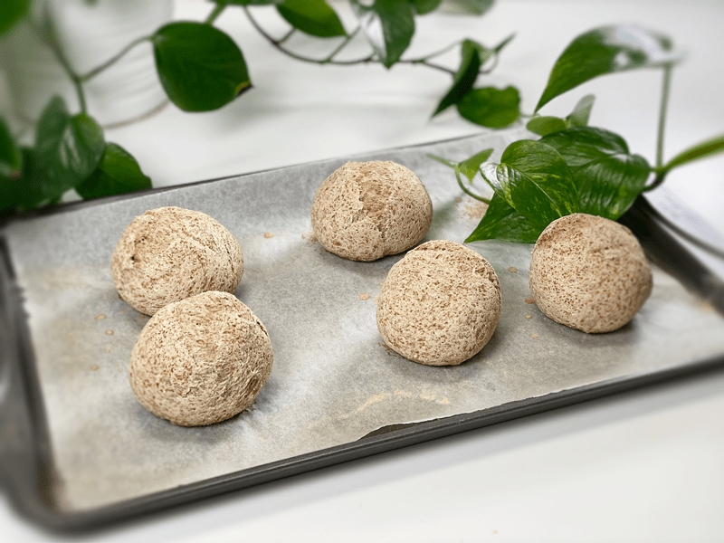
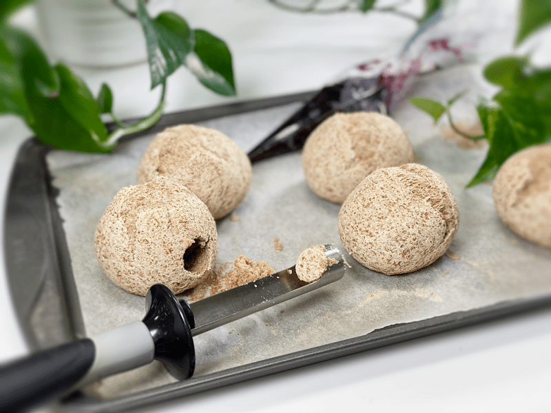
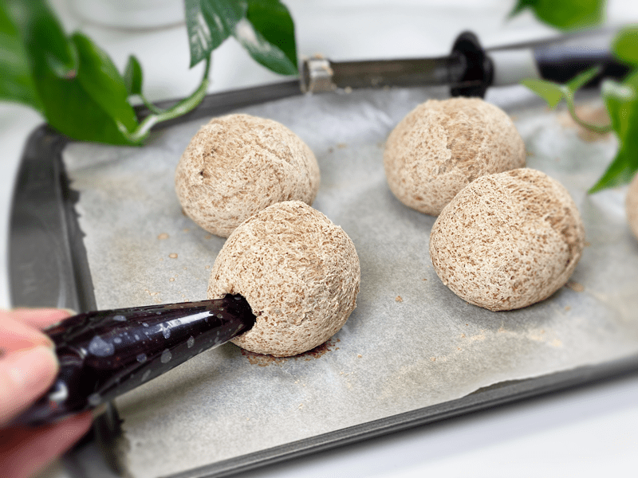
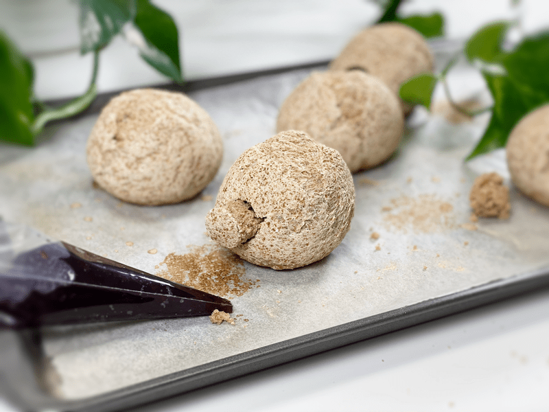
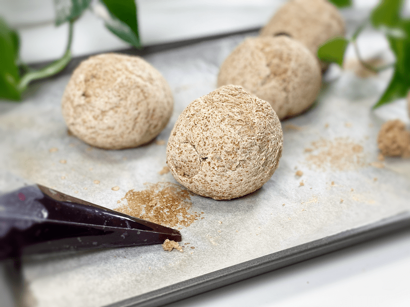
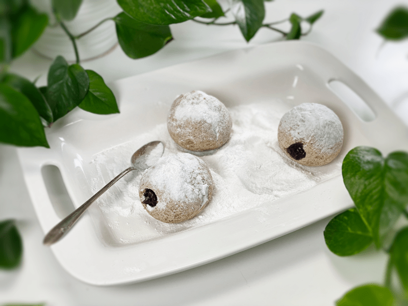

Jelly Filled Doughnuts | Baked | Gluten-free | Vegan | Yeast-free
Have you ever made vegan, gluten-free, yeast-free, nut-free, soy-free, low-sugar, nutrient-dense, 100% guilt-free, DELICIOUS jelly-filled doughnuts? Sort of the opposite of what we may have grown up with — gluten-ized, yeasty, nutrient-void, high sugared, fried doughnuts, fully loaded with artificially flavored, imitation red gelatinized fruit spread. And did you know that there are more than 10 billion of these doughnuts made every year in the US alone? If you wish to contribute to this number but in a healthier way, keep reading.

My brain never rests. It’s always trying to reinvent healthier versions of foods that Bob and I can enjoy. Often we get caught up in sharing memories from long long ago when we USED to eat doughnuts. To say I had a favorite would be a fib… I loved them all. Never met a doughnut or a cereal that I didn’t like. But growing up, I did have a soft spot for jelly-filled doughnuts, and I suppose that was my inspiration for this recipe… well, that and filling my husband’s tummy with delicious and nutritious foods!

Let’s start off by being transparent — these doughnuts do not compare straight across the board to Dunkin Donuts or to Krispy Kreme. BUT if you are willing to sacrifice the 58 (go ahead and click on the following link… I counted) ingredients that ONE Glazed Raspberry Filled Doughnut has… then we are in business!

These jelly-filled doughnuts are easy to make and are worth each step that is required to create them. They are perfectly sweetened with minimal sugar (3 tablespoons worth) in the whole doughnut, plus the jelly. I even found a creative way to reduce the powdered “sugar” coating that I sprinkled on top.
Because these doughnuts are nutrient-dense, they won’t fill your mouth with a pillowy bite. Instead, the exterior of the doughnut has more of a substantial chew, but not a dense chew. As you take your first bite, the powdered “sugar” will kiss the tip of your nose (like all powder-sugared doughnuts should do), your teeth will easily sink down through the springy dough meeting up with the flavorful, naturally sweetened jelly. Truly, the perfect balance between texture and flavor.
Tip and Techniques
- Make sure that you use a jam or jelly that is thick (but not chunky) and not watery. You don’t want the filling to ooze out before you get a chance to enjoy it. You can make your own or use store-bought (please read those labels!). For a raw easy to make jelly/jam recipe, click (here) and see if I have a recipe on hand that will suit your taste buds.
- To reduce the amount of sugar in this recipe I used a combination of MarkusSweet (made from lohan guo monk fruit and erythritol, a natural alcohol sugar found in the human body made from non-GMO plant sources) and dried coconut flakes that were powdered together in my Magic Bullet. You can read more about low-glycemic sweeteners (here).
- The filling is added AFTER the doughnut has baked. I recommend using an apple corer to remove some of the center dough so the jelly has a pocket to fill.
- Once the doughnuts are done baking, they will need to cool BEFORE you pipe in the filling. Failure to do this will lead to a gummy interior. During the cooling time, the doughnut continues to bake, and rushing it will only lead to disappointment.
- Since these doughnuts aren’t made with yeast, you won’t find large air pockets inside the doughnut, so we will create this space with an apple corer and a small spoon or melon baller. The apple corer works perfectly because it has sharp little teeth to help drive it through the dough. Sometimes, all the dough you cut through won’t come out as you withdraw the corer; if it doesn’t, that’s where the small spoon or melon baller comes into play.
- Almond Extract: I added this to the dough to give it more of a doughnut flavor. Trust me, you don’t want to skip this ingredient.

Small print: When you sit down with your jelly-filled doughnut and a hot cup of tea, make sure that your first bite starts on the side in which the hole was made. Failure to do this will lead to a doughnut that is open on both sides, and each bite will cause the jelly to ooze out the other side and onto your favorite white shirt. I hope you enjoy these lovely doughnuts. Be sure to leave a comment below. blessings, amie sue

Ingredients
Roughly 7 (122 g each donut)
Jelly Filling
Powdered “Sugar” Coating
- 2 Tbsp MarkuSweet
- 2 Tbsp unsweetened dried coconut flakes
Preparation
Psyllium Gel
- Quickly whisk the water and psyllium husk powder in a mixing bowl. It will instantly start to gel, which is to be expected. Set aside while you prepare the remaining ingredients, so it can thicken.
- Preheat the oven to 350 degrees (F).
- Line a baking sheet with parchment paper, sprinkled with a little extra flour.
Dry Ingredients
- In the mixing bowl that we are going to knead the dough in, whisk together the oat flour, sorghum flour, buckwheat flour, arrowroot, baking soda, baking powder, and salt.
- Place the rolled oats and buckwheat in a blender container and blend to a flour texture.
- If you have a sifter, use that to thoroughly incorporate all the dry ingredients.
Mixing the Dough
- Add the psyllium gel, almond extract, and maple syrup to the bowl of dry ingredients.
- Using either a hand mixer or a free-standing mixer with dough attachments, knead for 5 minutes (set a timer on your phone) to ensure that it gets kneaded enough (don’t we all love feeling needed?).
- Start the mixer on low until the flour is folded in, then turn it up one speed. If you start off at too high a speed, the flour will jump out of the bowl.
- Divide the dough into 7 balls. I weighed each one to 122 grams. This created the perfect size–not too big, not too small.
- Roll the dough balls in your hands, smoothing out any cracks in the dough. Place them on the cookie sheet with at least 1″ space between them.
- Score the top of the doughnut ball with the tip of a sharp knife, going no more than 1/4″ deep.
- Bake on the center rack for 50-60 minutes.
- Take the doughnuts out of the oven and slide them onto a cooling rack. Once cooled, you can proceed with the filling.
Jelly Filling
- With the doughnuts cooled down, glide and twist an apple corer into the side of the doughnut. STOP before it breaks through to the other side. If any dough remains inside when you withdraw the apple corer, use a small spoon or preferably a small melon ball utensil (has sharp little teeth) to scoop out some of that dough (the dough removed is for the chef to snack on as a reward for all your work).
- It is best to place the jelly in a piping bag (no tip needed) to interject it into the doughnut. You can use a piping bag or ziplock bag–cut the tip off, insert it into the doughnut hole, and gently squeeze the contents of the bag into the doughnut (stopping when you reach the edge). If need be, you can use a spoon to push it in but it will be a bit messier.
- Place the filled doughnut on a serving plate to dust with the powdered “sugar.”
Powdered “Sugar” Coating
- In a grinder, such as a Magic Bullet, grind the sugar of choice along with the dried coconut, until it creates a powder.
- Spoon the coating into a small mesh strainer and dust the top of the doughnuts with the coating.
- Enjoy within a couple of days. We kept ours in an airtight container on the counter.
-

-
Don’t forget to score the top of each doughnut before baking them.
-

-
Fresh out of the oven.
-

-
Allow them to fully cool before removing the center dough with an apple corer.
-

-
Pipe in your favorite jelly or jam.
-

-
Optional – You can plug the jelly hole with the dough you removed.
-

-
Push it in until flush with the doughnut.
-

-
Dust the top of each doughnut with the powdered sugar/coconut powder.
© AmieSue.com